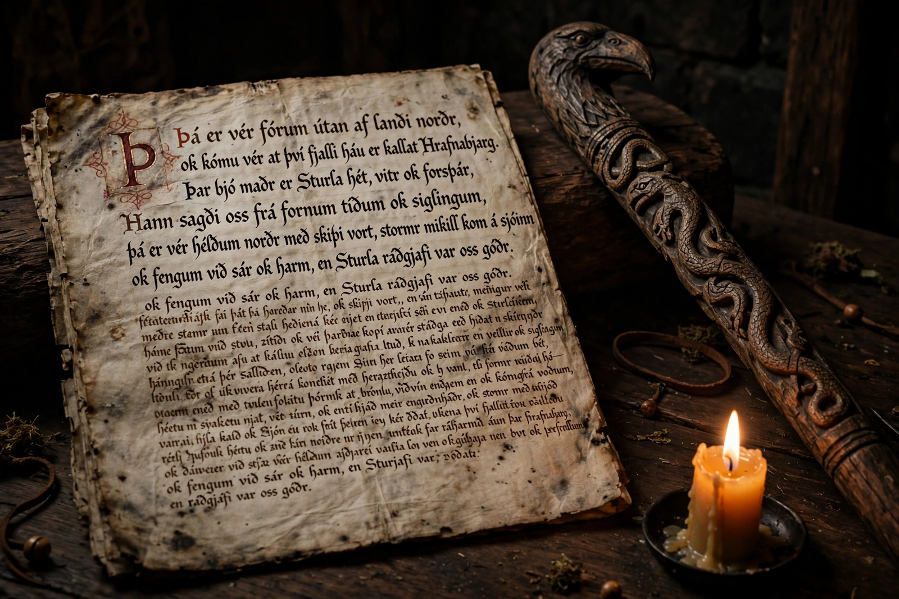

From Wikipedia, the free encyclopedia
| Poetic Edda | |
|---|---|
| Type | Collection of Old Norse poems |
| Principal manuscript | Codex Regius, c. 1270s, Iceland |
| Contents | Mythological lays (Völuspá, Hávamál, Grímnismál...) and heroic lays (Völsung cycle, Helgi poems) |
| Companion work | The Prose Edda of Snorri Sturluson (c. 1220) |

The Poetic Edda is the modern name for the collection of anonymous Old Norse poems — mythological and heroic — preserved chiefly in the Icelandic manuscript known as the Codex Regius, written around the 1270s though the poems themselves are older, some perhaps centuries older, composed in the oral tradition of the Viking Age and earlier. Together with Snorri Sturluson's Prose Edda, it is the principal source for Norse mythology: nearly everything known of Odin, Thor, Loki, Baldr and the world's end comes from these two books.
The mythological poems open with Völuspá, the seeress's prophecy that narrates the cosmos from creation to Ragnarök and rebirth — the single most important mythological text in the North. Hávamál, the sayings of Odin, mixes proverbial wisdom (the Viking Age's etiquette and ethics) with the myth of the mead of poetry and Odin's self-hanging on Yggdrasil. Others stage divine contests and journeys: Grímnismál's cosmology recited by the tortured Odin, Þrymskviða's comedy of Thor in bridal dress, Lokasenna's flyting, Skírnismál, Hymiskviða, Baldrs draumar. The heroic lays follow the Völsung family — Sigurd the dragon-slayer, Brynhildr, Gudrun, and the fall of the Burgundians — linking the Norse world to the continental Germanic heroic age of Attila and the Nibelungs.
The Codex Regius came to light in 1643, when the Icelandic bishop Brynjólfur Sveinsson obtained it; believing it the work of the medieval cleric Sæmundr the Learned, he sent it to the Danish king — hence "the King's Book". Its rediscovery, alongside related manuscripts (the Codex Wormianus, the Hauksbók Völuspá), ignited the Northern Renaissance in scholarship and literature: the Eddas stand behind Wagner's Ring, Tolkien's dwarves and dragons, and the modern world's entire picture of the Vikings' inner life — a picture the poems' compression and allusiveness keep tantalisingly incomplete.
Norse mythology · Odin · Yggdrasil · Baldr · Valkyrie